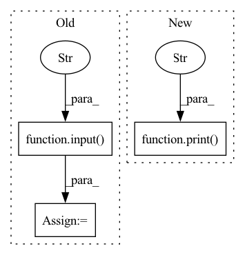

Pattern ID :24845
Before Change
print("0. NC vs AD")
print("1. sMCI vs pMCI")
print("\n")
choice = input("Which task would you like to perform?: " )
print("\n")
task = Task.NC_v_AD
ld_helper = LoaderHelper(task)After Change
else:
print("To train for sMCI vs pMCI you need transfer learning from a NC vs AD model. Would you like to transfer learning from an existing model or train a new NC vs AD model?\n")
print("0. Existing model.")
print("1. Train a new NC vs AD model.\n" )
choice = input("Please select an option: ")
def fetch_models_from_db():In pattern: SUPERPATTERN
Frequency: 5
Non-data size: 3
Instances Fragment ID: 76682706
Project Name: mcspooder/camull_net
Commit Name: 610e94803edbb70039d9eb50e822ec642122d5f6
Time: 2022-04-22
Author: danny@remy.localdomain
File Name: camull_cli.py
M Class Name: AnonimousClass
N Class Name: AnonimousClass
M Method Name: train_new_model_cli(1)
N Method Name: train_new_model_cli(1)
M Parent Class:
N Parent Class:
M File Name: camull_cli.py
N File Name: camull_cli.py
M Start Line: 131
M End Line: 141
N Start Line: 136
N End Line: 176
Before Change
print("To train for sMCI vs pMCI you need transfer learning from a NC vs AD model. Would you like to transfer learning from an existing model or train a new NC vs AD model?\n")
print("0. Existing model.")
print("1. Train a new NC vs AD model.\n")
choice = input("Please select an option: " )
def evaluate_a_model(device):
//print out the latest models
print("Here are 10 of your most recent NC v AD models.")After Change
print("\n")
print("A new NC vs AD model has been trained under the tag: {}".format(uuid))
print("\n")
print("Would you like to evaluate it? You must do so for it to be saved to the database." )
print("\n")
choice = input("Enter your choice [Y/n]: ")
if choice == "Y" or "y" or "":
choice = 1 Fragment ID: 76682707
Project Name: mcspooder/camull_net
Commit Name: 099aa0d83ce58fcb1cf1fa698ae89b52de356c11
Time: 2022-06-21
Author: danny@remy
File Name: camull_cli.py
M Class Name: AnonimousClass
N Class Name: AnonimousClass
M Method Name: train_new_model_cli(1)
N Method Name: train_new_model_cli(1)
M Parent Class:
N Parent Class:
M File Name: camull_cli.py
N File Name: camull_cli.py
M Start Line: 183
M End Line: 228
N Start Line: 218
N End Line: 258
Before Change
np.random.shuffle(perm)
image_shuffled = new_image_data[perm]
label_shuffled = new_label_data[perm]
folder = input("what your data should be named: " )
os.mkdir(os.getcwd() + f"\\training_data\\augmented\\{folder}")
np.save(os.getcwd() + f"\\training_data\\augmented\\{folder}\\{folder}X.npy", image_shuffled)
np.save(os.getcwd() + f"\\training_data\\augmented\\{folder}\\{folder}Y.npy", label_shuffled)
print("augmented data saved!")After Change
np.random.shuffle(perm)
image_shuffled = new_image_data[perm]
label_shuffled = new_label_data[perm]
print("operations complete! previous data amount was" , len(imageData), "new data amount is", len(image_shuffled))
folder = input("what your data should be saved as: ")
print("saving data!")
os.mkdir(os.getcwd() + f"\\training_data\\augmented\\{folder}")
np.save(os.getcwd() + f"\\training_data\\augmented\\{folder}\\{folder}X.npy", image_shuffled) Fragment ID: 76682704
Project Name: edilgin/deepforspeed
Commit Name: da409c9554fc09a0362c843c94b3811093224821
Time: 2022-03-07
Author: fehimornek@gmail.com
File Name: processData.py
M Class Name: AnonimousClass
N Class Name: AnonimousClass
M Method Name: augmentData(0)
N Method Name: augmentData(0)
M Parent Class:
N Parent Class:
M File Name: processData.py
N File Name: processData.py
M Start Line: 154
M End Line: 174
N Start Line: 154
N End Line: 176
Before Change
uuid = start(ld_helper, 40, model_uuids[int(choice)])
print("\n")
print("A new sMCI vs pMCI model has been trained under the tag: {}".format(uuid))
choice = input("Would you like to evaluate it (Y/n)?" )
print("\n")
if (int(choice) == "y" or "Y" or ""):
evaluate_model(device, uuid, ld_helper)
else:After Change
choice = input("Please enter the model number [1, 10] or the uuid that you would like to choose:")
else:
print("\n")
print("No models available. Please train a new model." )
choice = input("Would you like to train a new model[0,1]?: ")
if (int(choice) == 1):
print("Training a new NC vs AD model.") Fragment ID: 76682702
Project Name: mcspooder/camull_net
Commit Name: e7932133ad962f30ee5d65204640589e4ae65ffe
Time: 2022-05-21
Author: danny@remy.localdomain
File Name: camull_cli.py
M Class Name: AnonimousClass
N Class Name: AnonimousClass
M Method Name: transfer_learning(1)
N Method Name: transfer_learning(1)
M Parent Class:
N Parent Class:
M File Name: camull_cli.py
N File Name: camull_cli.py
M Start Line: 117
M End Line: 138
N Start Line: 117
N End Line: 133
Before Change
except:
print("No dataset found.")
// Define dataset dimension
dataset_dim = int(input(
"Please specify the desired dataset dimension (split: 70% training set, 10% validation set, 10% test set):\n" ) )
dataset_dim = [dataset_dim * p for p in [0.7, 0.2, 0.1]]
n_worlds = n_digits * n_digits
samples_x_world = [int(d /n_worlds) for d in dataset_dim]
dataset_dim = [ s * n_worlds for s in samples_x_world]After Change
samples_x_world=samples_x_world["test"], train=False,
download=True)
print(f"Dataset dimensions: \n\t{dataset_dim["train"]} train ({samples_x_world["train"]} samples per world), \n\t{dataset_dim["val"]} validation ({samples_x_world["val"]} samples per world), \n\t{dataset_dim["test"]} test ({samples_x_world["test"]} samples per world)" )
data = {"train": {"images": train_imgs, "labels": train_labels},
"val": {"images": val_imgs, "labels": val_labels}, Fragment ID: 76682700
Project Name: elemisi/vael
Commit Name: 80b6e79c650d20162719fbd8fbc2aae548a7c7e2
Time: 2022-02-06
Author: eleonora.misino@gmail.com
File Name: utils/nMNIST_addition.py
M Class Name: AnonimousClass
N Class Name: AnonimousClass
M Method Name: check_dataset(4)
N Method Name: check_dataset(3)
M Parent Class:
N Parent Class:
M File Name: utils/nMNIST_addition.py
N File Name: utils/nMNIST_addition.py
M Start Line: 174
M End Line: 181
N Start Line: 165
N End Line: 188